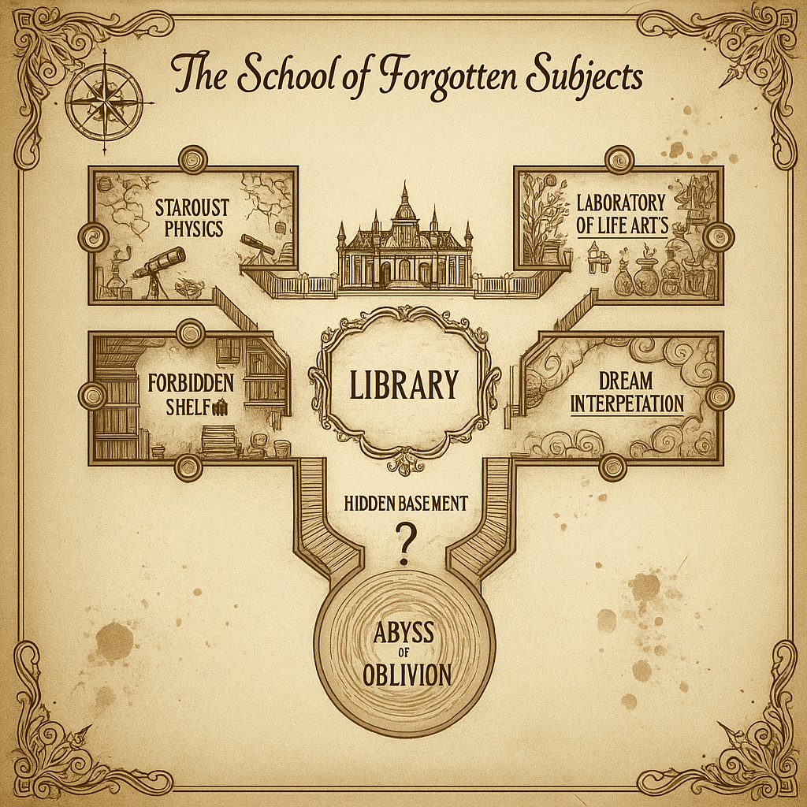

The School of Forgotten Subjects
..is a place that drifts between memory and myth,
where abandoned knowledge continues to breathe in secret halls
Echoes & Notices
Cafeteria Special: Transparent Soup
Yesterday's lunch featured "zero-calorie transparent soup". Students claim it tasted exactly like deadlines.
Chair on strike
One chair in classroom 2 has refused to be sat on since Monday. Claims it is "on strike".
Timekeeping Problem
The main hall clock has been stuck at 03:03 for three days. Administration says this is "still faster than our WI-FI".
Strange Discovery in Cafeteria
Today's omelette contained a fully working USB stick. IT department is checking for viruses before serving dessert.
Campus of Lost Subjects
Have a look at our map to see where rooms are located
